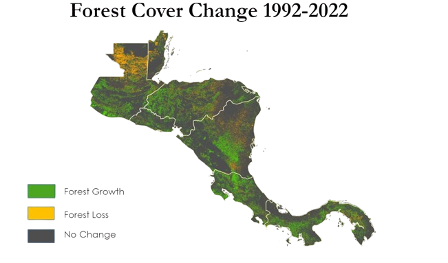
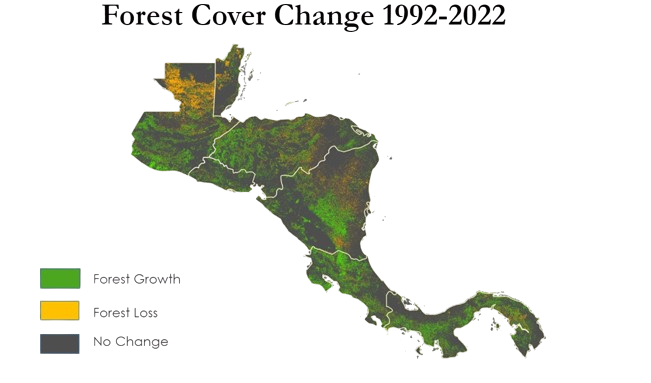
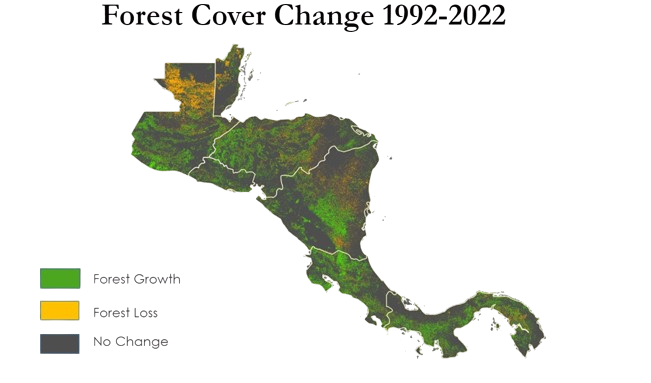

I am an environmentalist working in the intersection between the natural world and society. I believe that nothing in this world operates in isolation. As we continue to push the urban/wildlife interface I believe that it is incredibly important that understand how these two forces interact.
